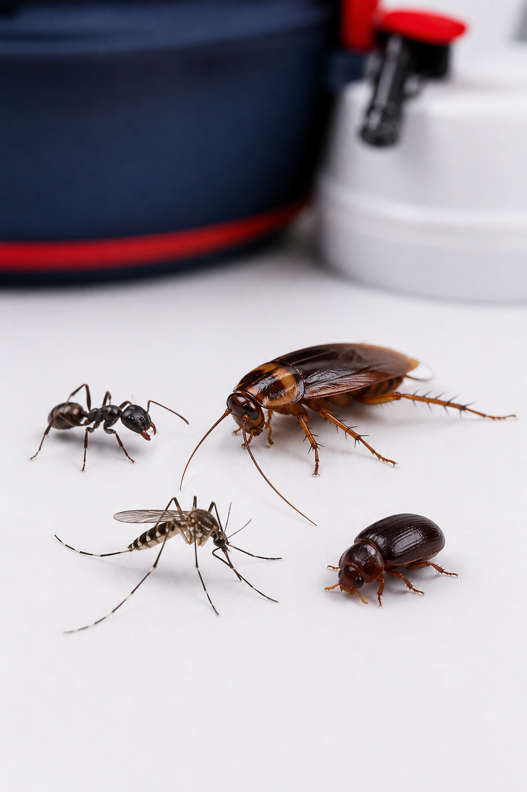
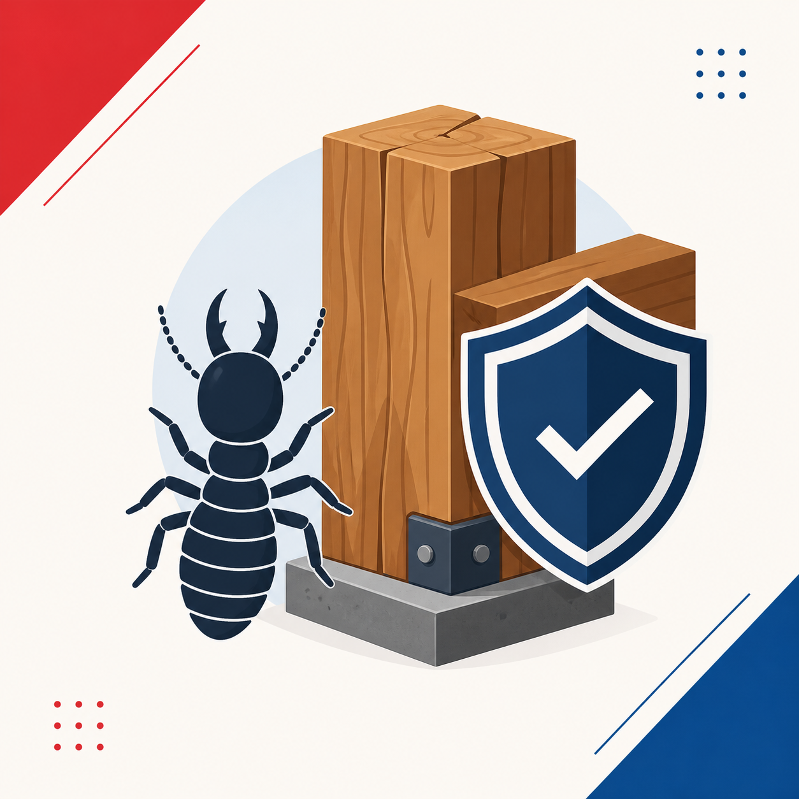
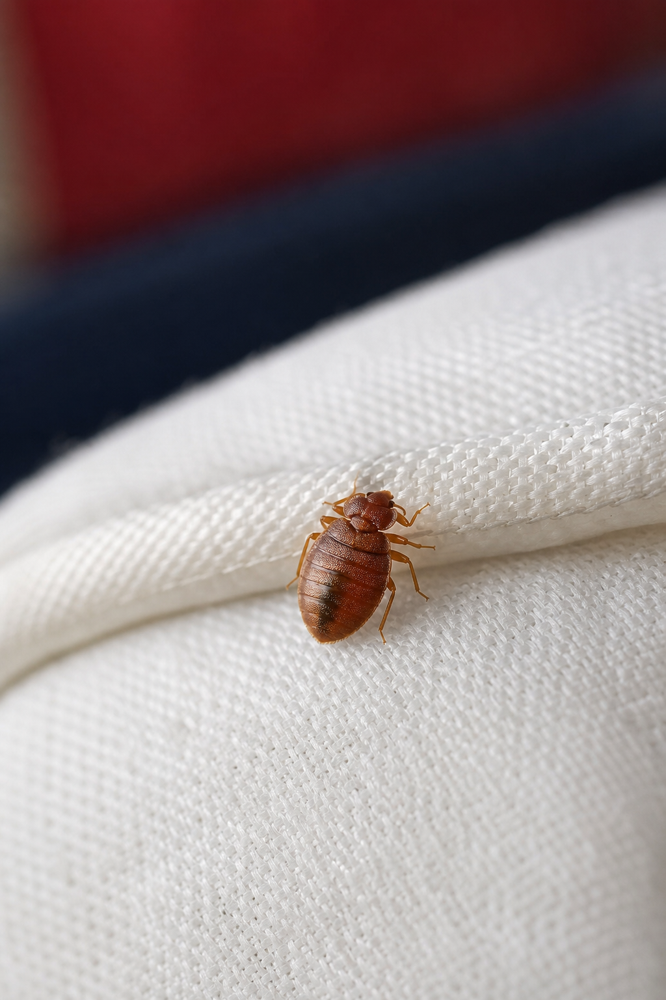
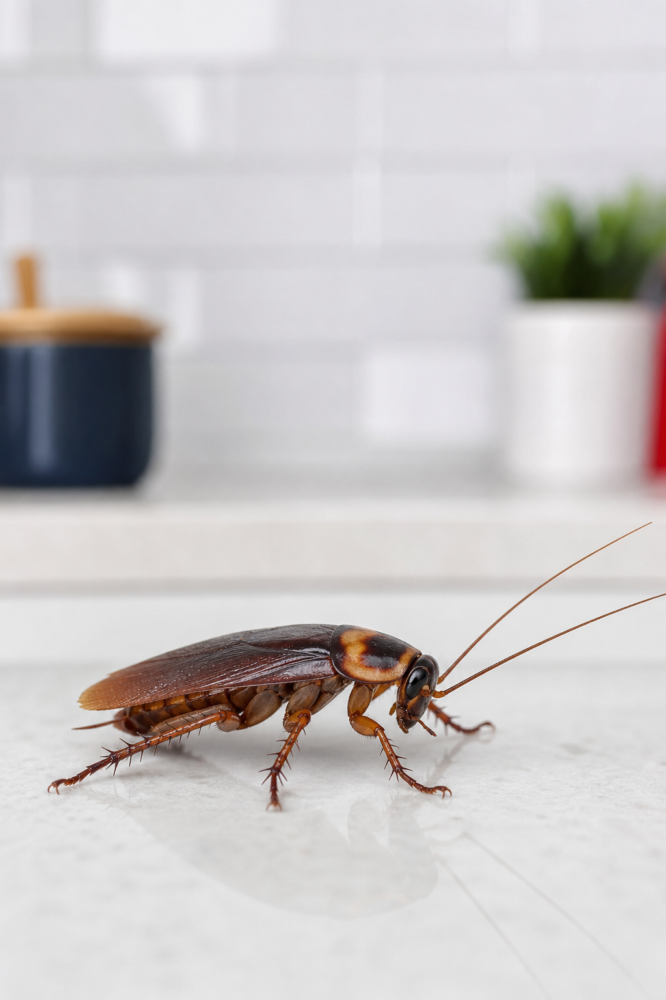
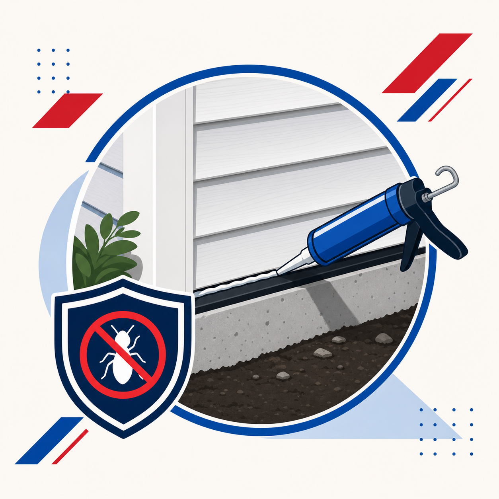

Clear inspections
Identify activity, conditions, and entry points before choosing a plan.
Residential & Commercial
All Borough Pest Control helps protect homes and businesses with practical treatments, clear inspections, and prevention-focused service. Call for help with active pest problems or to schedule a check before a small issue becomes a larger one.
Serving residential and commercial properties across the boroughs and nearby New Jersey areas.
Inspections First Find the source before treating.
Home & Business Residential and commercial service.
Prevention Focused Treatment plus exclusion guidance.
Clear Next Steps Practical recommendations after service.
About All Borough
Pest problems are easier to handle when the source is identified first. All Borough Pest Control looks for activity, entry points, nesting conditions, moisture issues, and the areas pests are using to move through a property. From there, service can be focused on the right treatment instead of guesswork.
The goal is straightforward: remove the current issue, reduce the conditions that invite pests back, and give homeowners and business owners a clear path for what should happen next.
Residential: homes, apartments, yards, basements, kitchens, and bedrooms.
Commercial: retail, office, food service, multi-unit, and service spaces.
Prevention: exclusion work, inspections, monitoring, and follow-up planning.
Identify activity, conditions, and entry points before choosing a plan.
Focus service where pest activity is actually happening.
Reduce repeat problems with exclusion and maintenance guidance.
Support for homes, apartments, offices, food service, and retail spaces.
How It Works
Share what you are seeing, where activity is happening, and how urgent the problem is.
Entry points, nesting areas, moisture, food sources, and pest activity are checked before treatment.
The service plan targets the current issue and identifies steps that help reduce future pest pressure.
Services
Open each service below for more detail. Every service starts with understanding what is happening on the property and choosing the treatment or prevention step that fits the issue.

General Pest Control Inspection, treatment, and prevention for common household pests.General pest control covers common pests that show up around living spaces, storage areas, kitchens, basements, and exterior perimeters. Service can include inspection, targeted treatment, and recommendations for reducing food, water, and shelter sources.
This is a good starting point when you are seeing pest activity but are not sure how widespread the issue is.

Termite Control Check for termite activity and protect vulnerable wood areas.Termites can affect framing, joists, trim, flooring, and other wood materials before the problem is obvious. A termite service focuses on finding signs of activity, identifying vulnerable areas, and choosing a treatment plan that protects the structure.
Inspections are especially useful before buying, selling, or renovating a property.
Rodent problems often involve more than removing what is already inside. Service looks for entry points, nesting areas, food sources, and routes along walls, utility openings, garages, and basements.
The best plan combines control, cleanup recommendations, and exclusion steps to limit repeat activity.

Bed Bug Treatment Inspect sleeping areas, furniture seams, cracks, and hiding spots.Bed bug service starts with a careful inspection of sleeping areas, furniture, seams, cracks, and nearby hiding places. The treatment approach depends on where activity is found and how far it has spread.
Clear preparation and follow-up guidance help make the service more effective and reduce the chance of missed areas.
Mosquito control focuses on outdoor areas where people gather, along with shady vegetation and standing-water conditions that can support mosquito activity.
Seasonal service can make patios, yards, and outdoor work areas more comfortable during warm months.

Cockroach Control Target kitchens, bathrooms, utility spaces, and active harborage areas.Cockroach control is commonly needed in kitchens, bathrooms, utility areas, basements, and commercial food spaces. Service focuses on harborage areas, moisture, sanitation conditions, and targeted treatment where roaches are active.
Follow-up may be recommended when activity is established or when neighboring units or shared walls are involved.
Ant issues often start outside and move indoors through small cracks, utility penetrations, or gaps around doors and windows. Service identifies trails and likely nesting areas before treatment.
Recommendations may include trimming vegetation, sealing entry points, and removing attractants that keep ants returning.
Commercial pest control supports offices, retail spaces, food service locations, multi-unit properties, and other business environments where pest issues can disrupt operations.
Service can be scheduled around business needs and focused on prevention, documentation, and recurring monitoring.

Pest Exclusion Seal gaps and access points that allow pests into the property.Exclusion helps close the gaps pests use to enter a property. Common areas include foundation openings, utility lines, vents, siding gaps, garage seals, door sweeps, and roofline access points.
This work pairs well with rodent service and recurring pest prevention.
A pest inspection helps identify what is active, what conditions are contributing to the issue, and where pests may be entering. It is useful for new problems, recurring activity, real estate concerns, and preventive maintenance.
After the inspection, you can choose the treatment or prevention plan that fits the property.
Common Questions
In many cases, yes. An inspection helps identify the pest, the source of activity, and whether treatment, exclusion, or both are needed.
Yes. Recurring activity often points to entry points, moisture, food sources, or surrounding conditions that need to be addressed alongside treatment.
Yes. Commercial service can support offices, retail locations, restaurants, multi-unit properties, and other business spaces.
Ready to schedule?